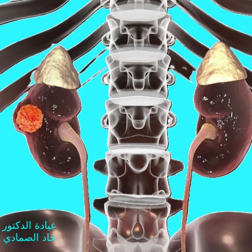

أورام الكلى (سرطان الكلية)
نظرة عامة على أورام الكلى (سرطان الكلية)
أورام الكلى، أو سرطان الكلية، هي نمو غير طبيعي للخلايا في الكلى. قد تكون هذه الأورام حميدة أو خبيثة. تُعد الأورام الخبيثة الأكثر خطورة لأنها يمكن أن تنتشر إلى أجزاء أخرى من الجسم. يُعد سرطان الكلية أحد أكثر أنواع السرطانات شيوعاً، ويزداد انتشاره مع التقدم في العمر. تُعتبر الكلية جزءاً حيوياً من الجهاز البولي، وتلعب دوراً مهماً في تصفية الدم وإزالة الفضلات والسوائل الزائدة من الجسم. عندما تنشأ الأورام في الكلى، يمكن أن تؤثر على وظيفتها وتسبب مجموعة من الأعراض والمضاعفات.

الأورام الكلوية يمكن أن تؤثر على وظائف الكلى بعدة طرق. يمكن أن تسبب انسداد في المسالك البولية، مما يؤدي إلى تراكم الفضلات والسوائل في الجسم. كما يمكن أن تسبب نزيف داخلي يؤدي إلى ظهور الدم في البول، وقد تتسبب في فقدان الشهية وفقدان الوزن غير المبرر. هذه الأورام قد تكون بطيئة النمو أو سريعة الانتشار، وتعتمد سرعة نمو الورم على نوع الخلايا السرطانية ومدى تشعبها.
بالإضافة إلى ذلك، قد تتسبب أورام الكلى (سرطان الكلية) في ارتفاع ضغط الدم، حيث تؤثر على قدرة الكلى على تنظيم مستويات الملح والسوائل في الجسم. كما قد تسبب فقر الدم نتيجة لتأثيرها على إنتاج الكلى للهرمونات التي تحفز إنتاج خلايا الدم الحمراء. هذه التأثيرات المتعددة تجعل من الضروري الكشف المبكر عن الأورام الكلوية وتحديد العلاج المناسب في الوقت المناسب.
أعراض أورام الكلى (سرطان الكلية)
قد لا تظهر أعراض واضحة في المراحل المبكرة من أورام الكلى. لكن مع تقدم الورم، قد تشمل الأعراض:
- ألم في الجانب أو الظهر
- وجود دم في البول (البيلة الدموية)
- فقدان غير مبرر للوزن
- فقدان الشهية
- الإرهاق والتعب
- حمى غير مبررة
- انتفاخ أو كتلة في البطن
- ارتفاع ضغط الدم
- فقر الدم
- تورم القدمين والكاحلين
من المهم مراجعة أخصائي المسالك البولية إذا كنت تعاني من أي من هذه الأعراض لتقييم الحالة والحصول على التشخيص المناسب. الكشف المبكر عن أورام الكلى يمكن أن يزيد من فرص الشفاء ويساعد في تجنب المضاعفات الخطيرة.
قد يلاحظ المرضى تغيرات في لون البول، حيث يمكن أن يكون البول أكثر قتامة أو يميل إلى اللون البني أو الأحمر. كما قد يشعر المرضى بآلام مستمرة في منطقة الخصر أو البطن، والتي قد تكون ناتجة عن نمو الورم وضغطه على الأعضاء المجاورة. بالإضافة إلى ذلك، قد يشعر المرضى بالتعب المستمر والضعف العام نتيجة للتأثيرات المتعددة للورم على الجسم.
تشخيص أورام الكلى (سرطان الكلية)
يعتمد تشخيص أورام الكلى على مجموعة من الفحوصات والاختبارات. تشمل هذه الفحوصات:
- الفحص السريري: يتضمن تقييم الأعراض والفحص البدني للكشف عن أي كتلة أو تغيرات غير طبيعية.
- اختبارات الدم: تساعد في تقييم وظائف الكلى والكشف عن أي علامات للسرطان. تشمل هذه الاختبارات تقييم مستويات الكرياتينين ووظائف الكبد وعدد خلايا الدم.
- تحليل البول: للكشف عن وجود دم في البول أو خلايا غير طبيعية. يمكن أن يساعد تحليل البول في الكشف عن البيلة الدموية والخلايا السرطانية في البول.
- التصوير بالأشعة: مثل التصوير بالموجات فوق الصوتية، التصوير المقطعي المحوسب (CT)، والتصوير بالرنين المغناطيسي (MRI) لتحديد حجم وموقع الورم. تساعد هذه الفحوصات في تحديد مدى انتشار الورم وتقييم الأعضاء المجاورة.
- خزعة الكلى: أخذ عينة من الأنسجة لفحصها تحت المجهر لتأكيد التشخيص. لكن لا يتم اللجوء لأخذ خزعة من أورام الكلية الا في حال تعذر إجراء عملية لاستئصال الورم. و ذلك لاحتمال انتشار الورم للخارج مكان الخزعة.
- تصوير الأوعية الدموية: لتقييم تدفق الدم إلى الكلى وتحديد وجود أي تشوهات في الأوعية الدموية. يمكن أن يكون هذا الفحص مفيداً في تخطيط الجراحة أو العلاج الإشعاعي.
تعتمد دقة التشخيص على الجمع بين هذه الفحوصات والاختبارات، وتكامل النتائج يساعد في وضع خطة علاجية مناسبة. يجب على المرضى الالتزام بتوجيهات الأطباء وإجراء الفحوصات الدورية لضمان متابعة حالة الكلى بشكل مستمر.
علاج أورام الكلى (سرطان الكلية)
ما هي خيارات العلاج المتاحة؟
تعتمد خيارات العلاج على نوع الورم، مرحلته، وصحة المريض العامة. تشمل خيارات العلاج:
- المراقبة النشطة: في حالة الأورام الصغيرة التي لا تسبب أعراضاً، قد يوصي الطبيب بمراقبة الورم بانتظام دون التدخل العلاجي الفوري. تتضمن المراقبة النشطة إجراء الفحوصات الدورية للتأكد من عدم تطور الورم.
- الجراحة: تُعد الجراحة الخيار العلاجي الرئيسي لمعظم أورام الكلى. تشمل العمليات الجراحية استئصال الورم فقط (استئصال جزئي) أو استئصال الكلية بالكامل (استئصال كلي). تعتبر الجراحة الخيار الأكثر فعالية في حال كان الورم محصوراً في الكلية.
- العلاج الإشعاعي: يستخدم لقتل الخلايا السرطانية وتقليص حجم الورم. يمكن استخدام العلاج الإشعاعي كعلاج مكمل بعد الجراحة أو في حالات الورم غير القابل للجراحة.
- العلاج الكيميائي: يستخدم الأدوية لقتل الخلايا السرطانية، وغالباً ما يستخدم في المراحل المتقدمة من السرطان أو إذا انتشر إلى أجزاء أخرى من الجسم. يهدف العلاج الكيميائي إلى تقليل حجم الورم ومنع انتشاره.
- العلاج المناعي: يستخدم لتعزيز الجهاز المناعي للجسم لمحاربة السرطان.
من المهم مناقشة كل الخيارات مع استشاري المسالك البولية لتحديد أفضل خيار بناءً على الحالة الفردية. يعتمد النجاح العلاجي على مدى تشخيص المرض في مراحله المبكرة والتزام المريض بالعلاج الموصوف.
تتضمن العلاجات الجراحية المتقدمة تقنيات مثل الجراحة بالمنظار؛ ويتم اما استئصال الكلية كاملة بالمنظار أو استئصال جزئي لازالة الورم، والتي تقلل من الألم وفترة التعافي. تُعد هذه التقنيات مفيدة في تقليل المخاطر الجراحية وتحسين النتائج.
ملخص أورام الكلى (سرطان الكلية)
أورام الكلى (سرطان الكلية) هي حالة خطيرة تتطلب التشخيص والعلاج الفوريين. تشمل الأعراض الشائعة ألم الظهر، وجود دم في البول، وفقدان الوزن غير المبرر. يعتمد التشخيص على الفحوصات السريرية و المخبرية و التصوير الطبقي أو الرنين المغناطيسي. تشمل خيارات العلاج الجراحة، والعلاج الإشعاعي، والعلاج الكيميائي، والعلاج المناعي. يمكن أن تزيد التشخيصات المبكرة والعلاج الفعال من فرص الشفاء وتحسين نوعية الحياة. من المهم استشارة استشاري المسالك البولية لتحديد الخيار العلاجي الأمثل بناءً على الحالة الفردية لكل مريض.
تتطلب أورام الكلى متابعة دقيقة وتقييمات دورية لضمان فعالية العلاج ومنع الانتكاس. يجب على المرضى الالتزام بالنظام العلاجي الموصوف وإجراء الفحوصات الدورية لتقييم تقدم العلاج وكشف أي علامات للانتكاس في وقت مبكر.
مراجع أورام الكلى (سرطان الكلية):
-
Bukavina L, Bensalah K, Bray F, et al. Epidemiology of Renal Cell Carcinoma: 2022 Update. Eur Urol. 2022;82(5):529-542. doi:10.1016/j.eururo.2022.08.019
-
Capitanio U, Bensalah K, Bex A, et al. Epidemiology of Renal Cell Carcinoma. Eur Urol. 2019;75(1):74-84. doi:10.1016/j.eururo.2018.08.036
-
Huang J, Leung DK, Chan EO, et al. A Global Trend Analysis of Kidney Cancer Incidence and Mortality and Their Associations with Smoking, Alcohol Consumption, and Metabolic Syndrome. Eur Urol Focus. 2022;8(1):200-209. doi:10.1016/j.euf.2020.12.020
-
Du W, Guo K, Jin H, Sun L, Ruan S, Song Q. Association Between Metabolic Syndrome and Risk of Renal Cell Cancer: A Meta-Analysis. Front Oncol. 2022;12:928619. Published 2022 Jun 27. doi:10.3389/fonc.2022.928619
-
Alcala K, Mariosa D, Smith-Byrne K, et al. The relationship between blood pressure and risk of renal cell carcinoma. Int J Epidemiol. 2022;51(4):1317-1327. doi:10.1093/ije/dyac042
-
Al-Bayati O, Hasan A, Pruthi D, Kaushik D, Liss MA. Systematic review of modifiable risk factors for kidney cancer. Urol Oncol. 2019;37(6):359-371. doi:10.1016/j.urolonc.2018.12.008
-
ASCO. Kidney Cancer: Statistics. Available at: https://www.cancer.net/cancer-types/kidney-cancer/statistics
-
MacLennan S, Imamura M, Lapitan MC, et al. Systematic review of oncological outcomes following surgical management of localised renal cancer [published correction appears in Eur Urol. 2012 Jul;62(1):193]. Eur Urol. 2012;61(5):972-993. doi:10.1016/j.eururo.2012.02.039.
-
Widdershoven CV, Aarts BM, Zondervan PJ, et al. Renal biopsies performed before versus during ablation of T1 renal tumors: implications for prevention of overtreatment and follow-up. Abdom Radiol (NY). 2021;46(1):373-379. doi:10.1007/s00261-020-02613-4
-
Pierorazio PM, Johnson MH, Ball MW, et al. Five-year analysis of a multi-institutional prospective clinical trial of delayed intervention and surveillance for small renal masses: the DISSRM registry. Eur Urol. 2015;68(3):408-415. doi:10.1016/j.eururo.2015.02.001
-
Jewett MA, Mattar K, Basiuk J, et al. Active surveillance of small renal masses: progression patterns of early stage kidney cancer. Eur Urol. 2011;60(1):39-44. doi:10.1016/j.eururo.2011.03.030.
-
Powles T, Albiges L, Bex A, et al. Renal cell carcinoma: ESMO Clinical Practice Guideline for diagnosis, treatment and follow-up. Ann Oncol. 2024;35(8):692-706. doi:10.1016/j.annonc.2024.05.537.